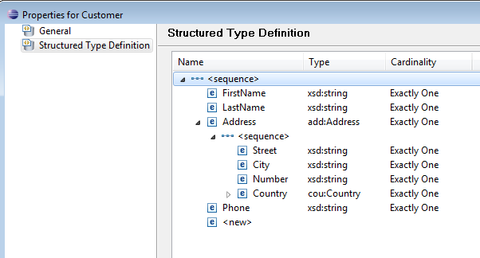

The Stardust Workflow Execution Perspective supports the automatic generation of GUI forms to display and modify data of structured data types.
If Manual activities are activated in the JSF-based Workflow Execution Perspective> a form is created at runtime for all data mappings whose endpoints return
data types.
For the primitive and structured data the following mapping rules are used
| Data Mapping Endpoint Type | GUI Element | ||||||
|---|---|---|---|---|---|---|---|
| Integer, float or string type | Entry fields with corresponding validation rules. Readonly, when the data mapping is an IN path only. | ||||||
| Boolean type | Checkbox. Readonly, when the data mapping is an IN path only. | ||||||
| Enumeration type | Combo box with enumeration keys. Readonly, when the data mapping is an IN path only. | ||||||
| Composite data type | Titled boxes with GUI elements for all fields of the composite type | ||||||
| List of the above | Tables displaying the corresponding GUI elements for all list entries
and GUI controls to add and remove list elements as well as collapse and
expand the displayed GUI elements according to the following list
|
For example, for the structure

and the following data mapping
whereby customer is of structured type Person, the following GUI form is generated:
The combobox is created if direct mapping of enumeration is provided into activities or enumeration field is inside a composite type.
When working with XPATH enabled structured data in the Stardust Portal, make sure that the correct input is provided in the field. If no value is provided or the XPATH is null or inappropriate, a warning message is displayed in the Stardust Portal after expanding the data at the time of instantiation of the process or activity. To expand the data, click on the plus sign.
The warning message looks like as shown in the following screenshot: